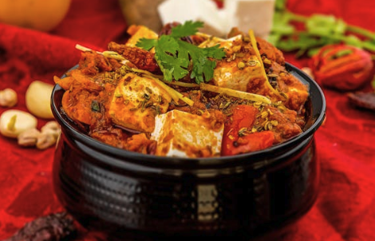

Lasagna

Description
Ingredients
- Paneer
- Onion
- Butter
- Ginger-Garlic Paste
Steps
- Melt butter in a skillet over medium heat. Add paneer cubes; cook and stir until gliden, about 5 minutes.
- Add onions, bell pepper, jalapeños, ground cashews, garlic paste, ginger paste, cayenne pepper, cumin, coriander, and garam masala; cook and stir until well combined and fragrant, about 1 minute.
- Mix tomato sauce, half-and-half, and salt into paneer mixture; simmer until thickened, about 30 minutes.